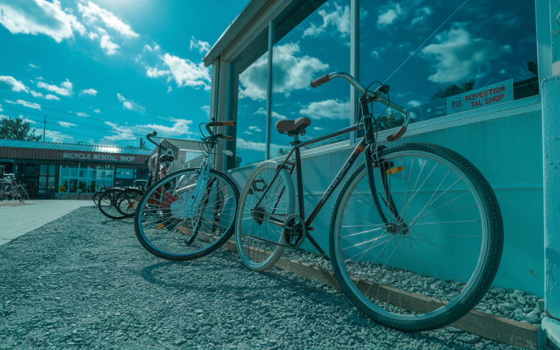

이용하기
따릉이와 함께하는 즐거운 자전거 여행을 시작해 보세요

안전수칙
여러분의 안전이 가장 중요해요
- 생명을 지켜주는 안전모 쓰기
- 야간운행에는 라이트 켜기
- 과속금지! 안전 속도 지키기
- 휴대폰 · 이어폰 사용하지 않기
자전거 관리 및 보수
따릉이 이용시 이런 점들은 꼭 알아주세요
-

- 따릉이를 타다가 고장 났는데 어떻게 해야 하나요?
- 고장난 자전거를 가까운 대여소에 반납하신 후, (파손이 심하거나 이동이 어려울 경우, 임시잠금 하신 후) 따릉이 앱 또는 콜센터(1599-0120)로 고장 신고 부탁드립니다.
- 고장신고 방법 : 앱 > 왼쪽 상단 메뉴 > 고객센터 > "고장신고"
-

- 자전 안장이 너무 낮습니다/높습니다
- 따릉이는 ‘공공자전거’라는 특성상, 다양한 시민이 이용하게 되므로, 당초 자전거를 도입할 당시 누구나 쉽고 간편하게 탈 수 있도록 설계 및 제작하였습니다.
- 만약 일반따릉이의 안장이 너무 높을 시에는, 일반따릉이보다 작게 제작된 새싹따릉이를 이용하여주시길 바랍니다
-

- 자전거 기어 단수가 너무 낮습니다.
- 자전거 활성화를 통한 녹색교통체계를 구축하기 위해서 근거리 교통보조수단용으로 설계 및 제작된 따릉이는 공공자전거라는 특성상
- 다양한 이용시민의 안전을 고려해야하기 때문에 속도에 제한을 두고자 내장형 3단기어로 운영중 이므로 양해 부탁드립니다.
-
 - 따릉이 앞뒤 브레이크는 어느쪽인가요?
- 따릉이의 앞브레이크는 왼쪽, 뒤브레이크는 오른쪽입니다.
- 따릉이 브레이크 사용요령과 관련하여 앞 브레이크는 정지역할이고 뒤브레이크는 속도 조절 역할을 하기 때문에, 실제 정지시에는 양쪽 브레이크를 동시에 사용해서 정지해야 합니다.
-

- 이용중 사고 났는데 어떻게 해야하나요?
- 따릉이 이용중 사고가 났을 경우, 공공자전거 종합보험에 의거 처리되며, 보험접수는 이용자 본인이 직접 보험사에 접수해야 합니다. - 접수처 : DB손해보험(02-1899-7751)
- 따릉이의 결함, 관리상 하자로 인해 이용자 본인 및 제3자의 신체가 장해를 입은 경우 또는 재물이 망가진 사고의 경우, 영조물 배상보험에 의거 처리되며 공단에서 보험접수합니다. - 접 수 : 서울시설공단 (02-1599-0120)
사용자들의 후기